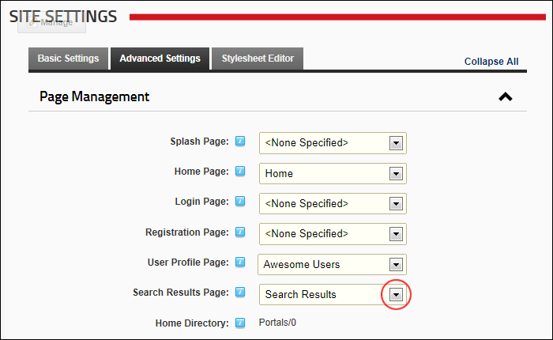

Setting the Search Results Page
How to set a custom or a default search results page for this site using the Site Settings page.
- Navigate to Admin >
 Site Settings.
Site Settings.
- Select the Advanced Settings tab.
- Expand the Page Management section.
- At Search Results Page, select from the following options:
- To set a custom search results page, select the page name from the drop down list. The selected page must have a Search Results module on the page in order for the search results to be displayed.
- To use the default search results page, select Search Results.

-
Click the Update button.
Related Topics:
-
See "About the Search Admin Module"
-
See "About the Search Results Module"